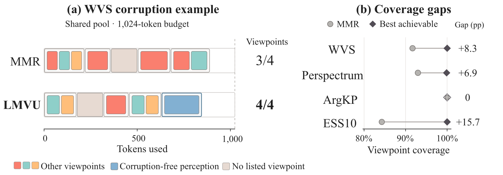
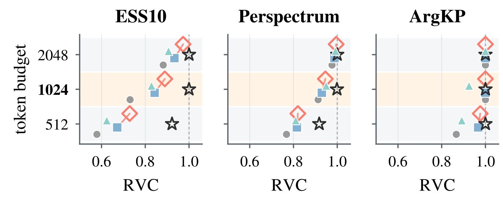

问一个关于选举参与的问题，完整的回答应该同时讲到“投了票”“没投票”“没有投票资格”三种人；如果上下文里全是投票者的回答，哪怕每条都准确、相关，也只代表了一种观点。在 1024 token 的上下文预算下，经典的 MMR 在世界价值观调查（WVS）的一个腐败感知查询上反复选中支持同样三个观点的证据，漏掉了“认为不存在腐败”这一观点。南洋理工大学和多伦多大学的这篇论文提出 LMVU（learned marginal viewpoint utility，学习到的边际观点效用），一个只有 18 个系数的线性排序器，按“这条证据能给当前上下文补上多少还没覆盖的观点”来挑证据。作者用召回观点覆盖率（RVC，即上下文覆盖了标注观点中的几成）来评价。在四个带观点标注的基准上，LMVU 在受保护的 WVS 测试折上达到和精确最优解一样的满覆盖，四个基准平均 RVC 0.9588，超过全部 16 个非 oracle 方法，其中包括两个训练成本高出几个数量级的神经重排器。

1. 问题：相关不等于覆盖
RAG 通常按和查询的相关性给段落排序，相关的优先放进上下文。但有些查询需要覆盖不同的答案或立场。作者把“一组证据共同支持的某个答案类别或立场”叫作一个观点（viewpoint）。高相关的证据可能都支持同一个观点，其他观点就没人代表。MMR 这类方法会在相关性和“与已选证据有多像”之间做权衡，近来追求多样性的 RAG 选择方法也沿用这个思路。可语义上的多样不等于观点上的覆盖：措辞不同的证据可能支持同一个观点，措辞相近的证据也可能立场相反。
作者把任务写成一个预算约束下的覆盖问题。每个查询有一个完整的候选池和一份标注好的观点清单，每条证据有自己的 token 成本，并支持其中某几个观点。目标是在总成本不超过预算的前提下，让选中的证据覆盖尽量多的观点，每个观点只算一次，这个比例就是 RVC。关键的约束是推理时看不到标注：观点标签只在训练和评测时使用，选择器只能根据看得见的证据特征和已经选了什么，来估计下一条证据能带来多少新观点。评测时有标注，作者就能用动态规划精确求出全池最优解，从而算出任何选择方法离最优还差多少，作者称之为剩余空间（headroom）。
2. 方法：学习每条证据的边际观点效用

选择器每一步真正需要知道的，是某条候选在当前已选集合下的边际增益，也就是它能补上几个还没覆盖的观点。同一条候选的增益会随着选择变化，它支持的观点一旦都被覆盖，增益就降到零。这个增益要靠标注才能算，部署时用不了，但在开发集上可以算出来，所以作者拿它来训练一个代理打分器，让打分器只用推理时看得到的特征去模仿它。
训练数据是这样来的。作者在固定的开发候选池上用五种策略做选择：按稠密相关性贪心、实时 MMR、两种固定种子的随机顺序，以及按真实增益贪心的策略。每条选择过程截取最多前 9 步，作为一个个“已选到一半”的状态，去掉重复后，在每个状态下取最多 20 个候选，用标注算出它们各自的真实增益。
打分器本身是 18 个特征的线性组合。特征分四组。第一组描述候选本身（4 个）：检索分、和查询的余弦、长度、含几个原子片段；原子片段是数据集已经标好的更小单位，比如一条证据里拆出的单条论断。第二组看候选和已选证据的关系（5 个）：和已选各条的最大、平均、最小余弦，1 减最大余弦表示的新颖度，以及和已选向量平均的点积。第三组在原子片段上做同样的事（5 个）。先对候选的每个片段算 ：它和所有已选片段的余弦里的最大值。5 个特征是： 的平均、 的最大、1 减最大 、 的平均、 的最大。后三个衡量候选带来多少已选集合没有的论断。第四组描述已选集合（4 个）：已选几条、已用和剩余的 token 数、已选证据的平均检索分。所有相似度都复用稠密检索已经算好的冻结嵌入，不需要新模型。最后一组特征对同一状态下的所有候选都一样，在比较时会互相抵消，拟合出的系数恰好为零，所以预算只通过“放不放得下”来起作用，不参与打分。
作者没有直接回归增益，因为不同状态下增益的范围不一样，从零到剩余未覆盖的观点数都有。他们只在同一个状态里成对比较：如果候选 A 的真实增益比 B 大，就要求打分器给 A 更高的分，打平的对直接丢掉，再用带 L2 正则的成对 logistic 损失拟合。这样比较能消掉每个状态特有的整体偏移，优化的也正是选择器每一步面对的那个决定。这和 MMR 的区别在于：MMR 用一个固定的 λ 权衡相关和新颖，LMVU 的权重虽然推理时也固定，但作用在随选择更新的几何特征上，所以新颖性惩罚会随着已覆盖的内容而变。同一条候选早期可能排在前面，它的观点被别的证据覆盖后，排名就会掉下去。
推理时从空的上下文开始，每一步只在完整放得进剩余预算的候选里选分最高的一条，加进去后更新状态；没有能放下的候选就停止，从不截断证据。每一步只需对每个候选做一次 18 维点积，靠增量统计量维护，不用构造整个池子的相似度矩阵。作者也明确说了，LMVU 只保证选出的集合不超预算，并不保证覆盖率离最优有多近。
3. 实验设置
作者用了四个基准。两个来自社会调查：世界价值观调查（WVS）和欧洲社会调查第十轮（ESS10）。Perspectrum 是“主张加不同视角”的结构，ArgKP 是“论点加要点”的结构，作者拿它当覆盖已经饱和的对照。这几个基准的规模差别很大，候选池从平均 9 条到 507 条不等，而且评测查询很少，WVS 和 ArgKP 都只有 6 个。预算取 512、1024 和 2048 token，主结果用 1024。WVS 的评测用一个受保护的受访者折，只做预先声明的评测和只读审计，从不拿来拟合。编码器是冻结的本地 all-MiniLM-L6-v2。
除了广度上的 RVC，作者还报告一个“重复支持”版本 RVC₂：一个观点只有一个来源支持算半分，有两个以上不同来源才算满分，用来衡量深度。对比的基线有十几个，包括 BM25、稠密检索、交叉编码器重排、MMR、几种聚类和子模函数类的多样性方法，以及按同一协议复现的多样性选择方法 MMKP 和 AdaGReS、神经重排模型 JPR 和 RichRAG。作者审计确认运行时没有读过任何标注字段。他们也说明，因为之前看过留出集，这次扩大到全池的实验属于探索性分析，不算新的确认性检验。
4. 主要结果
1024 预算下的 RVC（广度）与 RVC₂（重复支持），节选：
| 方法 | WVS | Perspectrum | ArgKP | ESS10 | 平均 | RVC₂ 平均 |
|---|---|---|---|---|---|---|
| Dense | 0.7833 | 0.9126 | 1.0000 | 0.7306 | 0.8566 | 0.7695 |
| FacLoc | 0.9167 | 0.9108 | 1.0000 | 0.8130 | 0.9101 | 0.8469 |
| MMR | 0.9167 | 0.9296 | 1.0000 | 0.8427 | 0.9222 | 0.8314 |
| MMKP | 0.6241 | 0.9482 | 0.9667 | 0.2502 | 0.6973 | 0.5468 |
| M0（静态） | 0.7981 | 0.9495 | 0.9250 | 0.8287 | 0.8753 | 0.8065 |
| JPR | 0.8361 | 0.9074 | 1.0000 | 0.7197 | 0.8658 | 0.8233 |
| RichRAG | 0.8167 | 0.8908 | 0.9234 | 0.9569 | 0.8970 | 0.8362 |
| LMVU | 1.0000 | 0.9457 | 1.0000 | 0.8893 | 0.9588 | 0.8795 |
| Oracle | 1.0000 | 0.9987 | 1.0000 | 1.0000 | 0.9997 | — |
（M0 是只用相关性、余弦相似度和长度三个静态特征的消融版本。）
先看 MMR 离最优还差多少。ArgKP 上差距为零，也就是怎么选都已经满覆盖；剩余空间最大的是 ESS10，MMR 还差约 0.16。LMVU 在 WVS 上把差距全部补上，在 ESS10 上补回了大约三成，在 ArgKP 上和天花板持平。表里还能看出三件事。只靠词面匹配的 BM25 在 WVS 和 Perspectrum 上不如嵌入方法。结构化的多样性启发式很看基准，比如 MMKP 在 Perspectrum 上胜过 MMR，到 ESS10 却因为每个簇有选取上限而崩到 0.25。只有学出来的、随状态变化的效用，在三个还有提升空间的基准上都超过了 MMR。
但统计显著性要谨慎看待。和 MMR 相比，LMVU 在每个基准上的差异都不是负的，可只有 Perspectrum 上的重复支持增益在统计上显著，其余差异的置信区间都跨过了零，很大程度上是因为评测查询太少。和较弱的基线比，在 ESS10 这样查询较多的基准上能看到显著优势。反例也有：ESS10 上 RichRAG 显著超过了 LMVU。两个神经方法各自只在一个基准上称王，JPR 在 ArgKP，RichRAG 在 ESS10，但在 WVS 和 Perspectrum 上都不如 MMR。
成本上的差距非常大。在一张 L20 GPU 上，JPR 每次拟合要 150 秒，RichRAG（SFT 加 DPO）要 963 秒，评测时的神经推理还要大约 11 个 GPU 小时。LMVU 在 CPU 上几秒就能重新拟合 18 个系数，最大的基准实测 1.3 秒，推理时每个候选只是一次点积。
5. 状态信息的作用、迁移和边界
LMVU 的优势主要来自“已经选了什么”这一状态信息。和只用静态特征的 M0 比，LMVU 在 WVS 上高出 0.20，在 ArgKP 和 ESS10 上也有明显提升；Perspectrum 是例外，M0 反而略高。为了排除“只是参数多”的解释，作者做了一个容量相同的对照：保留全部 18 个特征，但把其中 14 个和已选集合有关的特征在同一状态的各个候选之间随机打乱，让它们和候选对不上，候选自身的 4 个特征不动。结果开发集上的排序质量塌回到静态水平，所以增益确实来自状态信息。去掉那组原子粒度的特征，WVS 开发集上的排序质量也会大幅下降，说明细粒度的几何关系很重要。
系数学到的规律能跨基准迁移。作者用其余三个基准的数据训练、在第四个上测试，LMVU 仍在 WVS、Perspectrum 和 ESS10 上超过 MMR，WVS 还是满覆盖。
换成重复支持的 RVC₂，方法之间的排序大体不变，只有 WVS 上一个不看相关性的子模方法 FacLoc 略胜 LMVU。深度上还有更大的提升空间：LMVU 在 WVS 上的广度已经到了最优，深度却还差约 0.10。

预算越紧，LMVU 的优势越大。在 WVS 上，它对 MMR 的领先在 512 token 时最大，到 2048 token 收窄了大约三分之二，因为预算宽松时 MMR 也能把缺的观点买进来。作者还发现，实际增益大致随可提升空间变大而变大，已经到天花板的地方就没有增益，不过只有四个基准，这个相关只能当描述看。结论对编码器也敏感：换成 bge-base，Perspectrum 和 ESS10 上的增益显著；换成 bge-m3，增益变小且不显著，WVS 上甚至略低于 MMR。
6. 局限与实践意义
作者承认几点局限：效果依赖嵌入流水线，也依赖训练和评测所需的观点标注；扩大到全池的实验是探索性的；学出来的打分器没有覆盖率的近似保证；还没评测对下游生成的影响，也没研究换到需要新观点清单的领域怎么适配。还要注意评测规模很小，WVS 和 ArgKP 各只有 6 个查询，WVS 的满覆盖就是在这 6 个查询上得到的；和 MMR 的差异大多不显著；换编码器结论会变。
对做 RAG 的工程团队，这篇论文提供了一个便宜、可审计的选择层：不用训练神经重排器，只用现成的嵌入算 18 个特征，几秒训完，推理只是点积，可以直接替换检索之后、拼上下文之前的 MMR。它适合问卷分析、舆情、政策问答这类“各方观点都要出现”的场景，前提是手里有一批带观点标注的开发数据。更值得借鉴的是它的评测方法：先用精确最优解算出还有多少提升空间，确认覆盖能不能提高、能提高多少，再决定要不要换选择器。像 ArgKP 这样已经没有提升空间的场景，换什么方法都不会有收益。